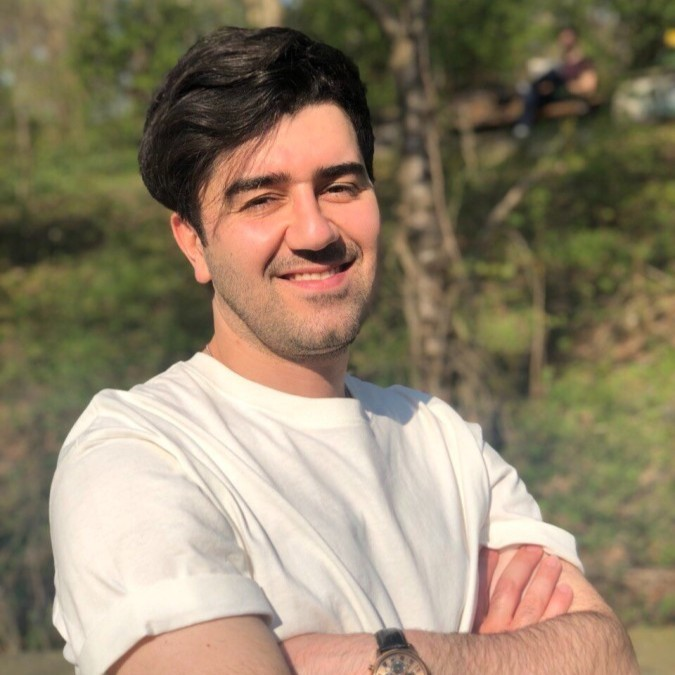

Multi-Armed Bandit for Energy-Efficient and Delay-Sensitive Edge Computing in Dynamic Networks with Uncertainty
Saeed Ghoorchian and Setareh Maghsudi
IEEE Transactions on Cognitive Communications and Networking (TCCN), 2020

I am an AI scientist at SAP. During 2023-2024, I held postdoctoral positions at the University of Tübingen and Ruhr-University Bochum, while also working at SAP. In 2023, I received a Ph.D. from the University of Tübingen. During 2017-2022, I worked as research assistant at the Technical University of Berlin and the Technical University of Hamburg. My research interests include reinforcement learning, imitation learning, representation learning, and causality in LLMs.